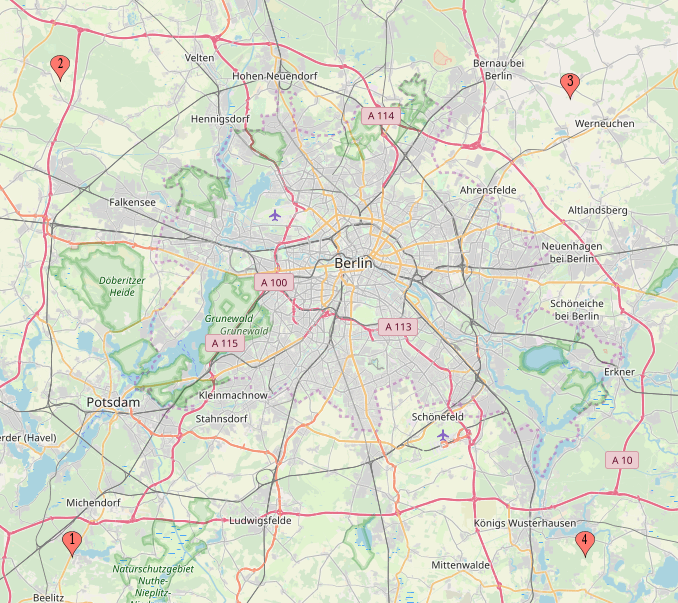

The idea originally came to me a while ago while doing a Differential Geometry course. Specifically when discussing Riemannian metrics and Geodesics.
I always joked that the real distance between two points should be measured in travel time and not Kilometers (or Miles, for the bold), so why not turn it into a metric, and see how far apart everything really is?
In theory, this is a metric. The travel time from a place to itself is always zero, and any other place would require some positive amount of time, and if I took some bus to get to a place, I can just take the same bus in the other direction. Moreover it should always be quicker to go from a place $u$ to a place $v$ directly, without making a stop at $w$, so that all metric properties are satisfied.
In practice, things are not as simple. Transportation depends on time of day, and while I might catch all trains just in time in one direction, going back could require long wait times. Even without these delays a bus might go through a one-way street one way, and require a longer path when coming back, or one half of the train station might be closed for repairs.
All in all, this really depends on the algorithm implemented to calculate the travel time. It might not even be continuous, especially when it's not 100% optimal. We could try rectifying it by eliminating wait times and taking the minimum/maximum/average of two directions, but this would require much more detailed travel information, which might not be that easy to come by. We therefore leave these perusals for later.
The first idea is simple. Create a grid around my house and calculate the travel time to every point. This would give us some linear transform we can apply to every square region, placing every point at its new "distance" on the same straight line from my house. Let's see how it goes.
How are we going to measure travel time? Obviously I'm not going to implement such an algorithm myself. The first result on google for "travel time map" hits a seemingly relevant Travel Time API, but their plans start at 250EUR a month, which is a bit over my 0EUR limit.
The other natural candidate is Google Maps. I use it all the time anyway, so why not now?
Going over their API offers, they have a relevant looking Distance Matrix API, which accepts transport mode as a parameter and supports public transit.
This seems perfect for my use case, the only problem is it's not free. Luckily for me I was lazy and never went on to creating GCP instances for my unfinished Kung Fu Chess project (I swear, I'll come back to you one day), which meant I could still use the free trial, providing me a 300$ credit.
Great! What does that give us? The Distance Matrix API costs 5.00 USD per 1000 elements , which to me seems really expensive, but we'll work with what we can get. This means we can find 60,000 travel time.
For simplicity I will only calculate travel time from my house to the destinations, looking at it all more as a normed space than a metric. Sampling in a square grid means our number of samples has to be a square. Unfortunately 60,000 is not a square, but $60,025 = 245^2$ is.
Here we encounter our first financing issue. 25 queries over the limit means I would have to pay 12.5 cents! There is no way I can afford that. The only logical recourse is to only do $244^2 = 59536$ queries. As a bonus we now get 464 queries to experiment with, before starting to eat into our quota.
We have decided on an API, which we want to to apply to a 244 by 244 grid, and need to create it. Let us now create that grid, so that we could call the API on it.
A grid, for our purpose anyway, is just a collection of points with a constant distance $d$ from their nearest neighbors, such that the line through a point and any one of it's nearest neighbors is always parallel to some axis.
Unfortunately I hold the controversial belief that the earth is round. In particular this means that the shortest path between two points is not a "straight" line, but a geodesic, whose exact projection depends on our exact "chart", or map, of the earth.
In particular this means that taking straight lines on a map would actually not give us squares. To see how bad it is I googled the Curvature of earth, which turns out to be about 8 inches per mile, or in real world units about 12.7 cm per Kilometer. If I want a 100 km "square" grid, I will get a deviation of about 7.6 meters. This is good enough for me.
How should locations on the grid be represented? You might have heard of the Equator. In case you haven't its an imaginary line going around the earth at approximately equal distance from both polars (in case you haven't heard of them, one of them has Penguins. Not to be confused with Pangwings ).
This line is used to calculate the Latitude of a point of earth. Which is the angle in degrees (relative to the center of the earth) of your point from it's projection on the Equator. This gives you a powerful tool to represent the North-South position of every point of earth. Restricting you to a single line parallel to the equator. The similar yet slightly different idea of Longitude restricts you to a unique circle going through both poles. Their combination gives you the all-mighty Geographic Coordinate System ubiquitously (I believe) used for such purposes.
One quirk of such an angle-based system, is that the change in distance when one coordinate changes by one degree depends on your position on the earth. Specifically with longitudes, which are not even well-defined at the poles, 1 degree could be anywhere from 1cm close to the pole (how far?
Avoiding the calculation, I used mapcustomizer.com to plot coordinates and empirically find good enough angles for our case. My experiment showed that a good range for the latitude is 52.28 to 52.68 with the longitude ranging from 13 to 13.7, giving a bound box of about 50km.
This grid is a bit smaller than I hoped, but it looks to cover most interesting places in the image, and with 244 points per axis the edge length of each grid square is still 205 meters, which is a bit larger than I hoped.
The image and linked map above show another annoying quirk of the mapping algorithms. In order to calculate locations Google is converting the coordinates into more familiar addresses, which can result in a pretty large jump from the original position. My assumption is that this is mostly prominent in relatively empty locations, so for the most part it shouldn't affect the calculations. I'm therefore going to ignore this fact for now and hope it does not affect the result too much.
Reading the Google Distance Matrix API, The basic parameters required were units, origins, destinations, mode and key, all of which are pretty self explanatory. In addition I decided to set the arrival_time to the 1st of February 2020 at 12:00:00 (in seconds since epoch). Going by arrival_time will hopefully eliminate waits to the first vehicle in the chain, and taking a fixed date in the future ensures traffic and availability conditions wouldn't change during the sampling. 12:00 sounds like a good candidate, as public transport usually works at full efficiency while the roads are relatively empty. I somewhat arbitrarily decided to have my house as the destination and all other locations as origins, an interesting test could be to reverse this, but as said I do not have the budget for all of these, as I want to maximize the number of queries made.
Combining all of the above, I came up with the following test query:
https://maps.googleapis.com/maps/api/distancematrix/json?units=metric&origins=52.38,13.1|52.58,13.6&destinations=52.488314,13.342744&mode=transit&arrival_time=1580558400&key=MYSECRETKEY
which returned a nice result:
{
"destination_addresses" : [ "Münchener Str. 31, 10825 Berlin, Germany" ],
"origin_addresses" : [
"Fritz-Zubeil-Straße 53, 14482 Potsdam, Germany",
"Schleifweg, 16356 Ahrensfelde, Germany"
],
"rows" : [
{
"elements" : [
{
"distance" : {
"text" : "26.1 km",
"value" : 26124
},
"duration" : {
"text" : "1 hour 3 mins",
"value" : 3763
},
"status" : "OK"
}
]
},
{
"elements" : [
{
"distance" : {
"text" : "58.4 km",
"value" : 58423
},
"duration" : {
"text" : "2 hours 45 mins",
"value" : 9885
},
"status" : "OK"
}
]
}
],
"status" : "OK"
}
Each origin corresponds to a "row" where each destination appears as an "element". Since we will always limit ourselves to one destination, we expect to get many rows with one element each, in which we are only really interested in the duration["value"] field corresponding to the travel time in seconds.